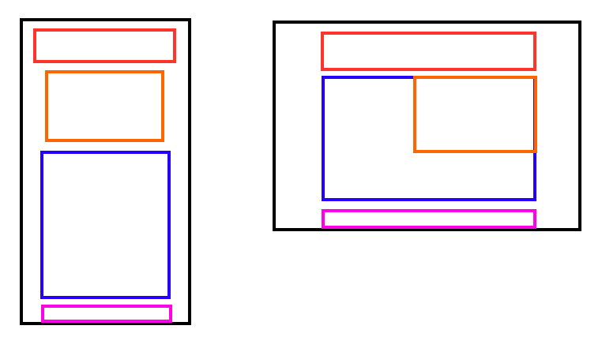

Phase 1
Development Notes
Yes, the implementation that I ended up using for phase one isn't really responsive at all.
This is due to the 3-column layout that the main article has, wrapping around the image. I could get
the paragraph to wrap around the image responsively just fine, but nothing I did would make
the paragraph wrap around properly when in the 3-column mode.
I floated the image (what I did originally),
I used a grid, I moved the image around to different parts of the html and tried all sorts of things,
but nothing would work except for absolutely positioning the image and manually inserting breaks into the
text to make it wrap as intended.
I could have submitted it with the main article not in 3 columns but still wrapping around the image
just fine, but since I tried so much to make the columns work I figured that even the janky method would have
to do, as it represents the original page as close as I could get it.
Responsiveness Plan

I plan to make this page function with a vertical layout at smaller screen sizes, and then at larger screen
sizes float the image to the right so that the main article content wraps around it. This will function a little
bit differently from the phase 1 implementation, as I needed to do some really strange things in order to make
the layout and word wrapping fit properly with the 3-column text layout.
Changing the layout like this should be pretty easy when I don't need to worry about columnizing that content,
as I've already done that before (at first, I didn't realize that text was split into columns).
Sources
- 1981 Text: Self Made
- Raiders of the Lost Ark Film Image
- Raiders of the Lost Ark Movie Poster
- Ronald Reagan Advertisement
Phase 2
Initial Changes
Because this project was planned to be a portfolio, there were a couple of initial things that needed to change.
First, there needed to be some sort of grid display for the different games, since I have a lot of past projects that need to be sorted.
Additionally, the base design didn't really work well for a portfolio. There's no point to having an article, and after receiving feedback about
my initial design, having a project in the place of the text on the left side makes it appear like an aside.
Featuring a portfolio piece that then looks like an aside just makes the design worse, so I moved the featured project to be above the
'About Me' section.
Responsiveness
Responsiveness wasn't an issue with this page. After the featured piece was moved above the 'About Me' section, there wasn't much I needed to do to make the page properly responsive. This was because many elements in the page use flexboxes, and ended up responding properly without needing to make any changes. The only thing that I did need to modify was the text in the 'About Me' section. At small screen widths, the text got really scrunched up and made the formatting very strange, so I gave it a minimum width. This made it wrap down due to the flexbox, which fixed the issue.
Challenges
The only major roadblock I ran into with this project was the scrolling of the page. I couldn't find out how to make it scroll smoothly, and because of the navigation it was always scrolling too far. I was only able to fix this after seeing the note about it in one of the checklists.